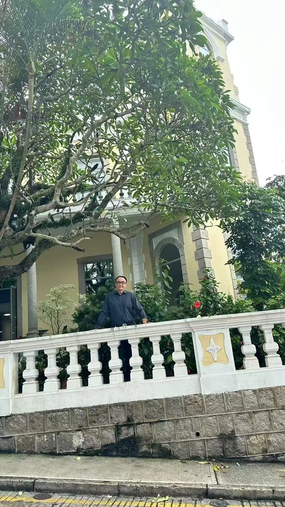
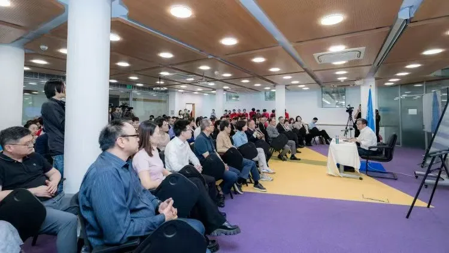
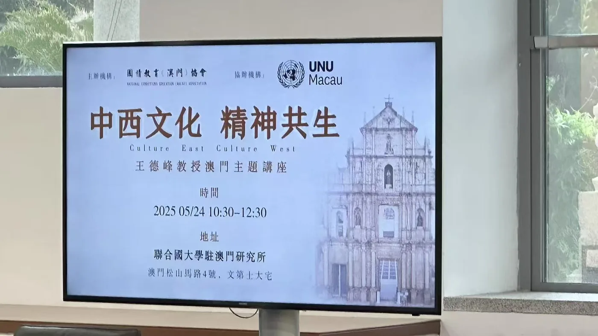
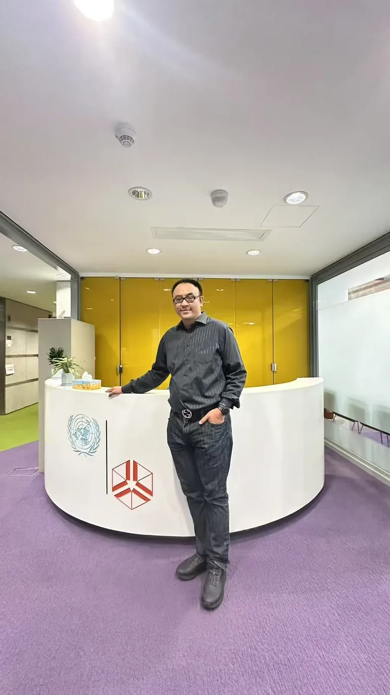

The morning of 24 May 2025 I sat in a yellow colonial house on Guia Hill — the Alves de Mesquita residence at 4 Estrada de São Lázaro, the second-oldest surviving mansion in Macao — and listened to Professor Wang Defeng of Fudan University give a Macao lecture titled Culture East, Culture West. It was, on paper, an academic talk. It was, in the room, something else.
What stayed with me afterwards was not a single argument. It was a small set of reframings that, put together, made the word civilisation sound heavier than it usually does. So I sat down that night and wrote the questions out. This essay is a draft of those questions — capital, culture, civilisation, and the three things each one cannot do without the other two.
When capital tries to colonise life
The first half of the morning was about the boundary of capital. Wang's reading was the classical one: capital, left to its own devices, attempts to colonise every other layer of life. It tries to set the price of attention, the price of dignity, the price of meaning. When it succeeds, you get a society that is rich and unliveable. The first move of any honest culture, Wang said, is to learn to say no — not to capital itself, but to its imperial reach.
I took this personally. In Macao we have spent two decades learning the difference between a tourist economy and a casino economy. We have spent the same two decades arguing about whether saying no to gambling expansion is the same as saying no to growth. It is not. Saying no to the colonisation of life is not the same as saying no to capital. It is saying yes to capital only where capital knows its place.
Culture confidence is the courage to self-criticise
The second reframe was sharper. Wang's argument: true cultural confidence is not the conviction that you are the best. It is the willingness to open your own culture's pathology to the world. He named Lu Xun. He named Hu Shi. He pointed out that both men's most uncompromising pages were written against their own civilisation, and that both men are now read as the conscience of that civilisation, not its enemies.
He made the comparison deliberately. A Harvard dean who publicly audits his own institution is not confessing weakness. He is doing the work of keeping the institution alive. Dream of the Red Chamber, Wang said, is one of the great Chinese works precisely because Cao Xueqin was willing to put the rot of an entire household on the page. The book is not a confession. It is an X-ray. To write an X-ray of your own house, you first have to love it enough to want it to live.
The classical line that Wang returned to, twice, was one most Chinese readers will recognise: 周雖舊邦，其命維新 — "Though Zhou is an old state, its mandate is to make itself new." A civilisation's vitality, he said, is not in its age. It is in its willingness to revise itself.
East and West: two logics, not two opponents
The third reframe was the most difficult one to carry outside the room. Wang argued that the West and the Chinese tradition are not two civilisations competing for the same prize. They are two logics developed under different conditions for different purposes. The West grew a tradition of substance, concept, and replicability — what we now call science. China grew a tradition of the heart-mind (心), of intuition, image, and tacit knowing.
He used the medical metaphor. Western medicine reads the indicator. Chinese medicine reads the pulse. Neither is more true. They are different translations of the same body. To argue that one is superior is to mistake a translation for the original.
This is where the room got quiet. Because the practical question underneath is: how do you build an institution, a curriculum, a regional policy, that holds both logics at once? The West's answer, for two centuries, has been to convert China into the West's vocabulary. China's answer, for the same two centuries, has been to defend itself by retreating into its own. Neither has produced much. The third option — to hold both logics in the same hand — is the one nobody has built at scale.
After "God is dead", where does a civilisation go?
The hardest sentence of the morning came near the end. When the West said God is dead, the West was naming a problem. The Chinese question, Wang said, is the same problem under a different name: where, today, is the Chinese spiritual home? Not the national home. Not the cultural museum. The spiritual home — the place where a person stands when everything external has been removed.
He quoted Laozi: 上士聞道，勤而行之 — "The highest kind of person, on hearing the Way, sets to work on it." Wang's gloss was austere. The deepest form of civilisation is not stored in data. It is stored in a person's willingness, on hearing the right sentence, to change the way they live tomorrow morning.
And then the line I have not been able to put down: capital can buy knowledge. It can stack data. It cannot buy wisdom. It cannot stack a civilisation. Real progress begins inside a single human being's awakening. That is not a slogan. It is the boundary of what any five-year plan, however well-funded, can deliver.
What the small shop teaches the plan
I left the lecture and walked down the hill past the UNU reception, past the lavender carpet and the UN-blue welcome desk. Past the half-dozen small souvenir shops at the bottom of the Calçada da Guia. Most of them have been there longer than I have been alive.
None of them, as far as I could tell, were doing badly. None of them, as far as I could tell, were doing particularly well either. They were doing what a small shop does in any old town: holding a piece of the place open, for whoever walks past.
That is the civilisation I am talking about. Not the one that wins the data race. The one that knows when to stop speaking. Capital's job is to build the road. Culture's job is to decide whether the road is worth walking. Civilisation's job is to remember why we built roads in the first place.
Capital can buy knowledge. It cannot buy wisdom. Real progress begins inside a single human being's awakening.
I do not know if Wang would put it this way. But the question I walked away with is the question I want to leave here. When we worry about culture in the age of capital, the real worry is not whether capital will win. It is whether we will, in the noise of winning, forget what capital was for.




This is a personal essay by Sean Own, first published on his English-language column at ownsean.com on 24 May 2025 (republished 3 September 2026 with light copy-editing). The original Chinese version was a social-media reflection on Professor Wang Defeng's Culture East, Culture West lecture at the United Nations University Institute in Macau (UNU Macau) on 24 May 2025. No external media references are quoted. Photographs taken at the lecture venue (Alves de Mesquita House, Macao) on the same day.